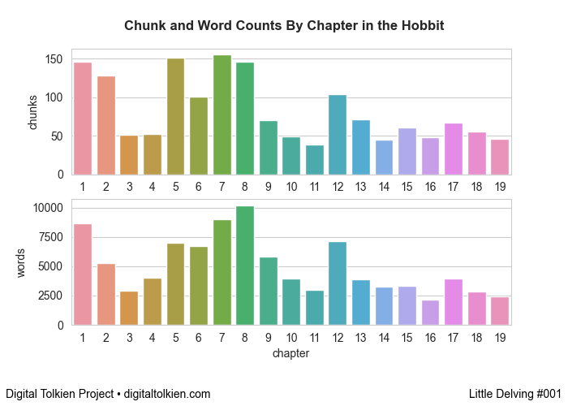
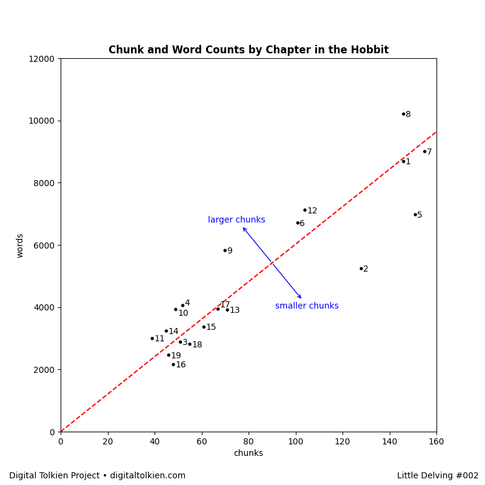
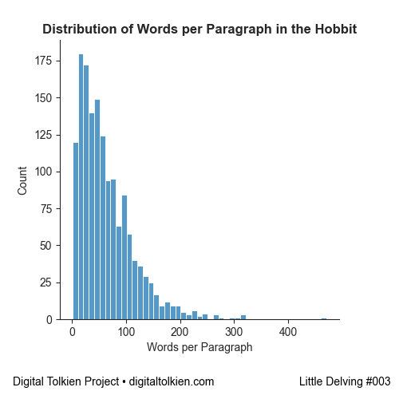
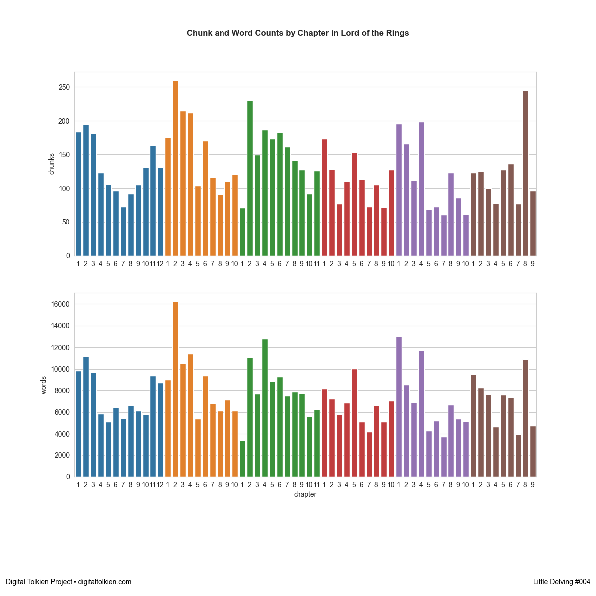
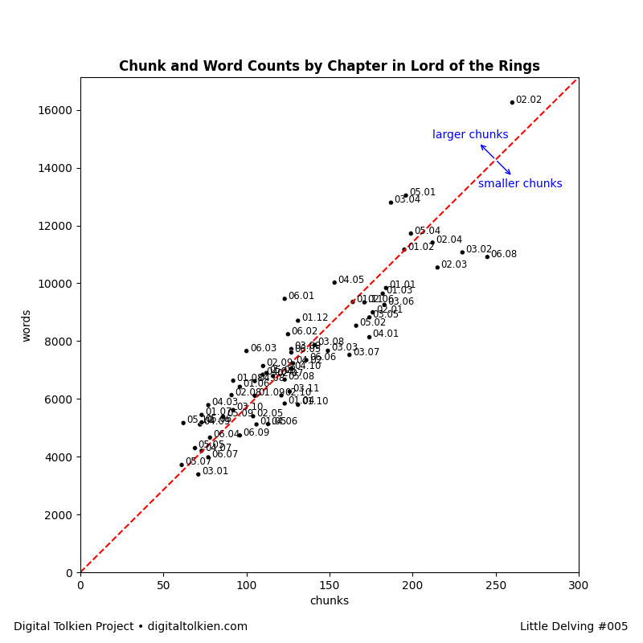
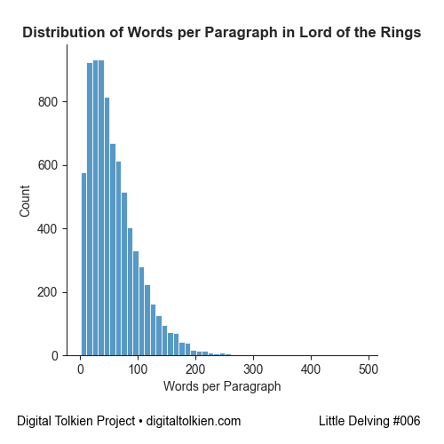
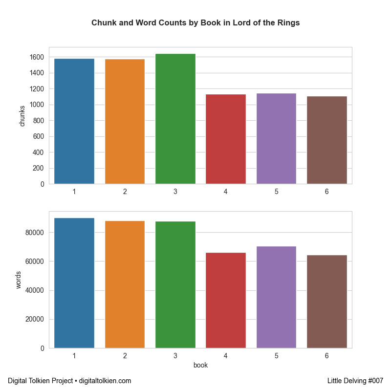
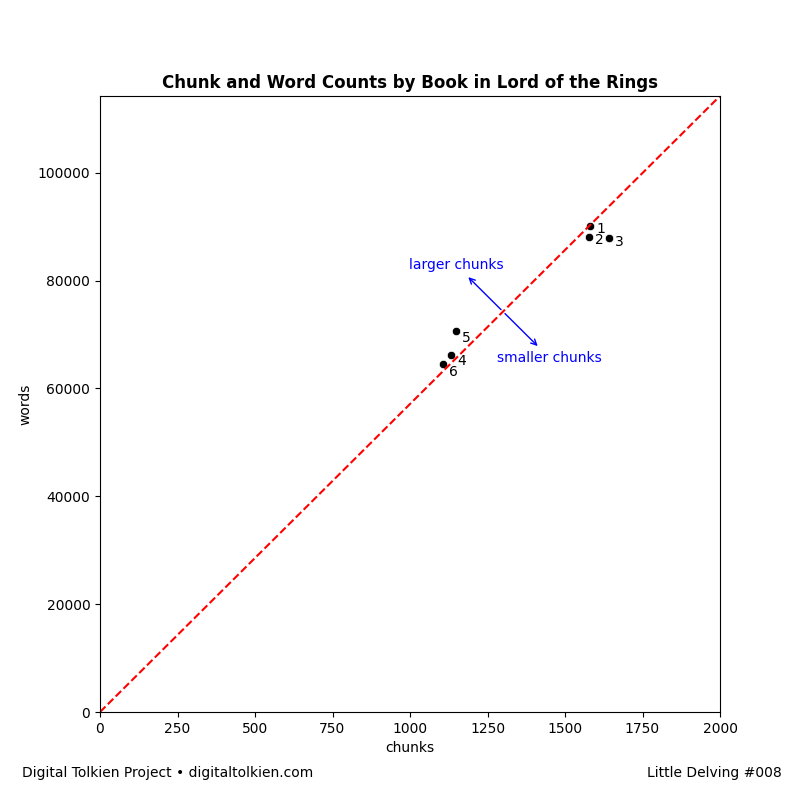
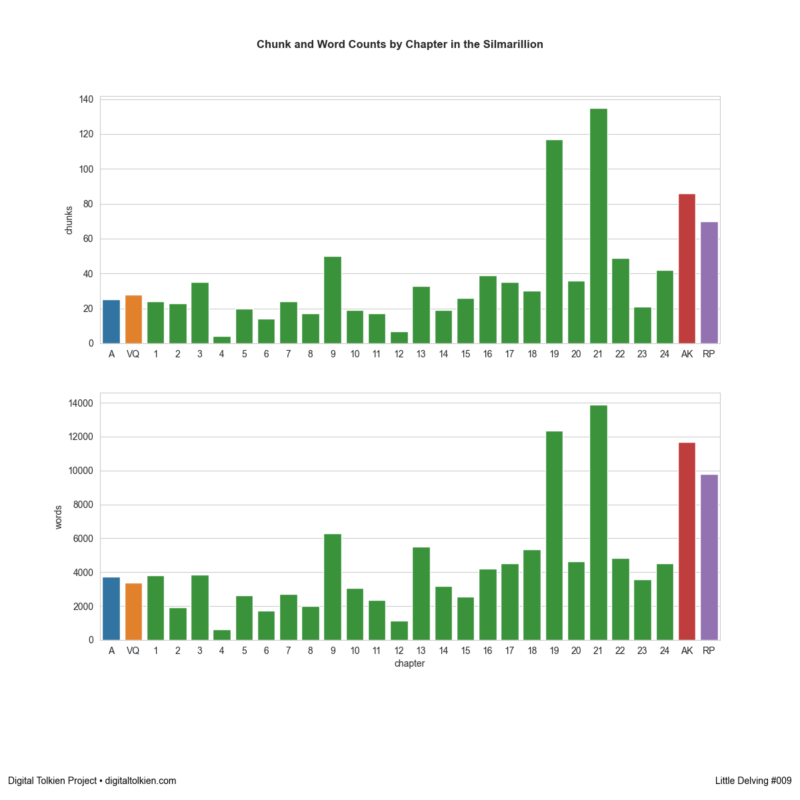
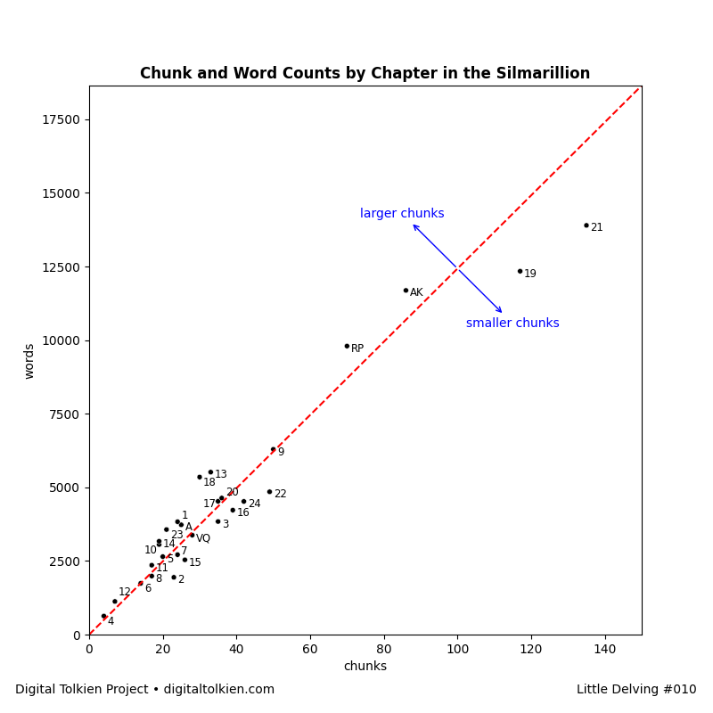

These are little visualizations based on the text and annotations of the Digital Tolkien Project. The code for each one is available as is the summary data where possible.
They are also posted to Instagram and Twitter.

001. Chunk and Word Counts by Chapter in the Hobbit
chunks are paragraph-like units (including poetry stanzas) and words are tokenized by first converting em-dashes to whitespace then splitting on whitespace.
code

002. Chunk and Word Counts by Chapter in the Hobbit (Scatter Plot)
same data as #001 but shown as a scatter plot to better identify which chapters have above or below average chunk (paragraph) sizes.
code

003. Distribution of Words per Paragraph in the Hobbit
Bin size 10. Only regular paragraphs counted (not headings, letters, or verse). Tokenization as before (em-dash to space then split on whitespace).
Paragraphs with over 300 words:
01.004
01.123
07.126
08.125
10.003
Paragraphs with over 300 words:
01.004
01.123
07.126
08.125
10.003
code

004. Chunk and Word Counts by Chapter in Lord of the Rings
chunks are paragraph-like units (including poetry stanzas) and words are tokenized by first converting em-dashes to whitespace then splitting on whitespace.
code

005. Chunk and Word Counts by Chapter in Lord of the Rings (Scatter Plot)
same data as #004 but shown as a scatter plot to better identify which chapters have above or below average chunk (paragraph) sizes.
code

006. Distribution of Words per Paragraph in Lord of the Rings.
Bin size 10. Only regular paragraphs counted (not headings, letters, or verse). Tokenization as before (em-dash to space then split on whitespace).
Longest paragraphs:
01.11.148
03.04.118
03.04.119
Longest paragraphs:
01.11.148
03.04.118
03.04.119
code

007. Chunk and Word Counts by Book in Lord of the Rings
chunks are paragraph-like units (including poetry stanzas) and words are tokenized by first converting em-dashes to whitespace then splitting on whitespace.
code

008. Chunk and Word Counts by Book in Lord of the Rings (Scatter Plot)
Intriguing how much the two halves cluster the way they do.
code

009. Chunk and Word Counts by Chapter in the Silmarillion
chunks are paragraph-like units (including poetry stanzas) and words are tokenized by first converting em-dashes to whitespace then splitting on whitespace.
code

010. Chunk and Word Counts by Chapter in the Silmarillion (Scatter Plot)
same data as #009 but shown as a scatter plot to better identify which chapters have above or below average chunk (paragraph) sizes.